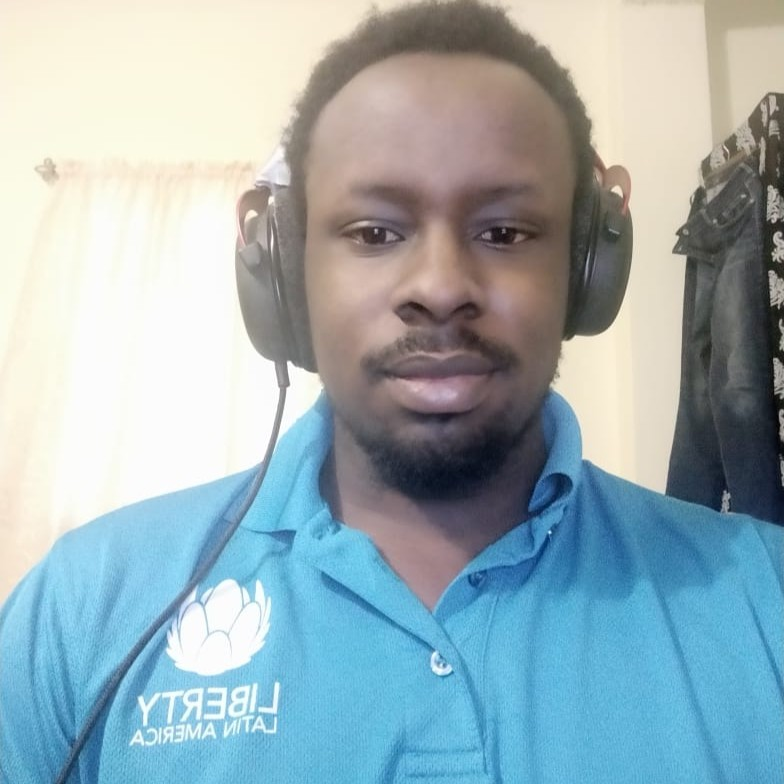

|  |
Curtley AlsoppTier 2 IP Network Specialist Cable and Wirless Communications I am a young and ethusiatic ICT professional. For the last 5 years my specialty focus has been on IP Network support from an enterprise and service provider perspective, however there have been overlaps in security appliance and voice over IP support. |
| DATE | COMPANY | POSITION | DETAILS |
|---|---|---|---|
| Nov 2018 – Present | Cable and Wireless Communication | Tier 2 IP Networking Specialist |
|
| April 2016 – November 2018 | Cable and Wireless Communication | CSC Tier 1 Engineer |
|
| May 2015 – October 2015 | Memory Bank Limited | Contract Technician |
|
| August 2014 – May 2015 | Advance Foam Limited | Local Audit Assistant |
|
| Python | ★★★★☆ | Routing & Switching | ★★★★★ |
| Javescript | ★☆☆☆☆ | Firewall | ★★★★★ |
| C | ★☆☆☆☆ | Voip | ★★★☆☆ |
| React JS | ★☆☆☆☆ | Cloud Services | ★☆☆☆☆ |